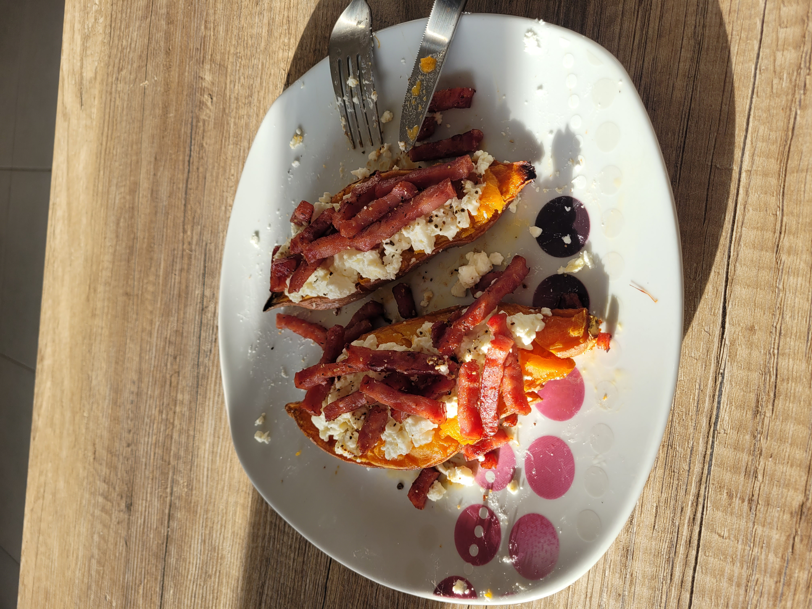

Sweet Potato & Goat Cheese Recipe

Description
This recipe is very easy to make and so delicious.
You will love the balance between fresh and warm, sweet and savory taste.
Warning: This recipe is created for the purpose of a web development exercise, I don't recommend following it.
Ingredients
- 1 sweet potato
- Fresh goat cheese
- Lardons
- Salt and pepper
- Provencal herbs
- Olive Oil
Steps
- Pre-heat the oven at 180°C
- Wash the sweet potato, cut it in half and put it on a plate with baking paper.
- Cut the flesh of the sweet potato and add a drizzle of olive oil on top. Put it in the oven for about 40 minutes.
- While the sweet potato is cooking, cook the lardons in a pan.
- When the sweet potato is cooked, put it in a plate and smash a little bit the flesh with a fork.
- Add the goat cheese, salt, pepper and herbs.
- Finally, add the lardons.
- And voilà!
Home